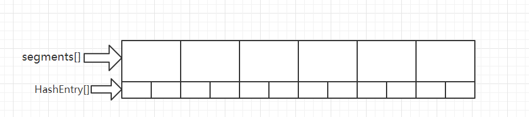

ConcurrentHashMap 1.7
1.前言
concurrentHashMap是线程安全的。那么它如何实现了线程安全呢。这里主要依赖两方面：
- 在关键部分使用了unsafe。可以查看[https://shimo.im/docs/9KXdpcPRCPcxDTTc/ 「UNSAFE」](https://shimo.im/docs/9KXdpcPRCPcxDTTc/ 「UNSAFE」)
- 使用了分段锁。
1.1 如何保证并发安全的
主要利用Unsafe操作 + ReentrantLock + 分段思想。
其中设计就到的Unsafe的操作主要有:
- compareAndSwapObject 通过cas的方式修改对象的属性。
- putOrderedObject 并发安全得给数组的某个位置赋值。
- getObjectVolatile 并发安全得获取数组某个位置的值。
分段思想是为了提高ConcurretHahsMap的并发量，分段数越高则支持的最大并发量越高，开发人员可以通过指定concurrentLevel参数来指定并发量。concurrentHashMap中的segment就是用来表示一个段的。 每个segment可以看作一个小型的hashMap，当调用concurrentHashMap的put方法时，最终会调用segment的put方法，而segment继承了ReentrantLock，所以segment自带可重入锁，当调用segment的put方法时，会先利用可重入锁加锁，加锁成功后再将待插入的k-v值插入到segment对应的table数组的具体位置，插入完成后解锁。
1.2 先简单说下分段锁
concurrentHashMap的结构比照HashMap，可以看作多了一层。 最外一层的数组是ss（segment数组），每个segment对象又对应一个HashEntry数组。 可以简单看作下图，后续会详细分析。

2.初始化方法
1public ConcurrentHashMap() {
2 this(DEFAULT_INITIAL_CAPACITY, DEFAULT_LOAD_FACTOR, DEFAULT_CONCURRENCY_LEVEL);
3}
4
5public ConcurrentHashMap(int initialCapacity) {
6 this(initialCapacity, DEFAULT_LOAD_FACTOR, DEFAULT_CONCURRENCY_LEVEL);
7}
8
9public ConcurrentHashMap(int initialCapacity, float loadFactor) {
10 this(initialCapacity, loadFactor, DEFAULT_CONCURRENCY_LEVEL);
11}
12
13public ConcurrentHashMap(Map<? extends K, ? extends V> m) {
14 this(Math.max((int) (m.size() / DEFAULT_LOAD_FACTOR) + 1,
15 DEFAULT_INITIAL_CAPACITY),
16 DEFAULT_LOAD_FACTOR, DEFAULT_CONCURRENCY_LEVEL);
17 putAll(m);
18}
以上方法都调用了下面的方法，所以我们重点说下这个方法
1// concurrencyLevel 并发级别 可以简单理解为segment数组的元素数量。后续会详细讲解 TODO
2public ConcurrentHashMap(int initialCapacity,
3 float loadFactor, int concurrencyLevel) {
4 if (!(loadFactor > 0) || initialCapacity < 0 || concurrencyLevel <= 0)
5 throw new IllegalArgumentException();
6 if (concurrencyLevel > MAX_SEGMENTS)
7 concurrencyLevel = MAX_SEGMENTS;
8 // Find power-of-two sizes best matching arguments
9 int sshift = 0;
10 int ssize = 1;
11 // 这个其实跟hashMap 1.7 的位置很类似，只是换了一种算法，道理是一样的。
12 // 按照默认值算的话，循环完之后，ssize = 16，ssshift = 4
13 // 其实这个sshift的值就是ssize二进制值的1所在的位数 TODO
14 while (ssize < concurrencyLevel) {
15 ++sshift;
16 ssize <<= 1;
17 }
18 this.segmentShift = 32 - sshift;
19 this.segmentMask = ssize - 1;
20 if (initialCapacity > MAXIMUM_CAPACITY)
21 initialCapacity = MAXIMUM_CAPACITY;
22 // concurrencyLevel可以看作是所有HashEntry数组总的长度
23 // ssize就是segment数组的长度。
24 // 所以这个值的意思就是计算出每个segment对象中HashEntry数组的初始化长度。
25 // 为什么要强调初始化长度，是因为在后面进行扩容后，每个segment对象中HashEntry数组的长度可能不同。后续会详细说。
26 int c = concurrencyLevel/ ssize;
27 // 因为是向下取余，所以可能会出现这种情况。
28 if (c * ssize < initialCapacity)
29 ++c;
30 int cap = MIN_SEGMENT_TABLE_CAPACITY;
31 while (cap < c)
32 // HasnEntry的最小长度就是2
33 cap <<= 1;
34 // create segments and segments[0]
35 // 初始化Segment对象，其实我们可以简单把segment对象当成一个hashMap。
36 // 为什么在这里初始化segments[0]呢？其实是为了后续初始化其他segment对象时能直接拿来用，而不用再计算一般。白白消耗CPU资源。
37 Segment<K,V> s0 =
38 new Segment<K,V>(loadFactor, (int)(cap * loadFactor),
39 (HashEntry<K,V>[])new HashEntry[cap]);
40 Segment<K,V>[] ss = (Segment<K,V>[])new Segment[ssize];
41 // 查看2.1 UNSAFE. putOrderedObject
42 UNSAFE.putOrderedObject(ss, SBASE, s0); // ordered write of segments[0]
43 this.segments = ss;
44}
2.1 UNSAFE. putOrderedObject
1private static final long SBASE;
2static {
3 Class sc = Segment[].class;
4 // 获取数组中第一个元素的偏移地址。
5 SBASE = UNSAFE.arrayBaseOffset(sc);
6 // 只是贴出部分代码，不代表concurrentHashMap的静态代码块只有这些代码。
7}
8
9UNSAFE.putOrderedObject(ss, SBASE, s0);
由上面的代码可知，UNSAFE.putOrderedObject(ss, SBASE, s0);的意思就是在ss[0]位置更新value值为s0。
3.put方法
1public V put(K key, V value) {
2 Segment<K,V> s;
3 // value不能为空。
4 if (value == null)
5 throw new NullPointerException();
6 // 获取key的hash值。
7 int hash = hash(key);
8 // 获取hash值对应的segment数组的index。
9 int j = (hash >>> segmentShift) & segmentMask;
10 // 获取segments数组第j位的值，查看3.2 UNSAFE.getObject(segments, (j << SSHIFT) + SBASE))
11 if ((s = (Segment<K,V>)UNSAFE.getObject // nonvolatile; recheck
12 (segments, (j << SSHIFT) + SBASE)) == null) // in ensureSegment
13 // 查看3.3 ensureSegment
14 s = ensureSegment(j);
15 // 查看3.4 segment.put
16 return s.put(key, hash, value, false);
17}
3.1 (hash »> segmentShift) & segmentMask;
这行代码目的就是获取key所在的segment数组的index，但是为什么这么算呢？ 由put方法可知，初始化时 segmentShift = 32 - sshift = 28。 segmentMask = ssize - 1 = 15。 segmentMask的二进制表示形式就是
10000 0000 0000 0000 0000 0000 0000 1111
hash »> segmentShift的二进制结果就是
10000 0000 0000 0000 0000 0000 0000 ****
所以(hash »> segmentShift) & segmentMask的意思就是把hash值的前n位(n为segmentMask的有效位数)与segmentMask进行与远算获取segment[]的index。
3.2 UNSAFE.getObject(segments, (j « SSHIFT) + SBASE))
1Class sc = Segment[].class;
2ss = UNSAFE.arrayIndexScale(sc);
3SSHIFT = 31 - Integer.numberOfLeadingZeros(ss);
Integer.numberOfLeadingZeros的意思就是获取一个数二进制形式的值的最前一个1的之前的0的个数。官方解释：返回指定值的二进制补码二进制表示形式中最高位（“最左端”）一位之前的零位数 我们只需要知道就在这里 SSHIFT = 31 -29 = 2。 而UNSAFE.getObject(segments, (j « SSHIFT) + SBASE)) 就是获取segments数组第j位的值。
3.3 ensureSegment
1// 就是初始化segment数组第k位的值。
2private Segment<K,V> ensureSegment(int k) {
3 final Segment<K,V>[] ss = this.segments;
4 long u = (k << SSHIFT) + SBASE; // raw offset
5 Segment<K,V> seg;
6 // 再尝试获取一遍，看到底有没有。
7 if ((seg = (Segment<K,V>)UNSAFE.getObjectVolatile(ss, u)) == null) {
8 // 没有的话就以ss[0]的值(我们在初始化concurrentHashMap的时候已经初始化了ss[0]的值)为原型初始化segment对象。
9 Segment<K,V> proto = ss[0]; // use segment 0 as prototype
10 int cap = proto.table.length;
11 float lf = proto.loadFactor;
12 int threshold = (int)(cap * lf);
13 HashEntry<K,V>[] tab = (HashEntry<K,V>[])new HashEntry[cap];
14 // 再检查一次。
15 if ((seg = (Segment<K,V>)UNSAFE.getObjectVolatile(ss, u))
16 == null) { // recheck
17 // 初始化后segment对象。
18 Segment<K,V> s = new Segment<K,V>(lf, threshold, tab);
19 // 再检查一次，通过cas的方式给segment数组的第k位赋值。
20 while ((seg = (Segment<K,V>)UNSAFE.getObjectVolatile(ss, u))
21 == null) {
22 if (UNSAFE.compareAndSwapObject(ss, u, null, seg = s))
23 break;
24 }
25 }
26 }
27 // 返回第k位的segment对象。
28 return seg;
29}
3.4 segment.put
这里已经是segment的方法了。
1final V put(K key, int hash, V value, boolean onlyIfAbsent) {
2 // 尝试去获取锁。
3 HashEntry<K,V> node = tryLock() ? null :
4 scanAndLockForPut(key, hash, value);
5 V oldValue;
6 try {
7 HashEntry<K,V>[] tab = table;
8 int index = (tab.length - 1) & hash;
9 // 获取index位的链表的头结点。查看3.4.3 entryAt
10 HashEntry<K,V> first = entryAt(tab, index);
11 // 遍历链表。
12 for (HashEntry<K,V> e = first;;) {
13 if (e != null) {
14 K k;
15 // 找到相同的key就覆盖（onlyIfAbsent为true就什么也不做）。
16 if ((k = e.key) == key ||
17 (e.hash == hash && key.equals(k))) {
18 oldValue = e.value;
19 if (!onlyIfAbsent) {
20 e.value = value;
21 ++modCount;
22 }
23 break;
24 }
25 e = e.next;
26 }
27 else {
28 // 在scanAndLockForPut里已经new了node了，这里直接用头插法插入链表。
29 if (node != null)
30 node.setNext(first);
31 else
32 // new一个node。
33 node = new HashEntry<K,V>(hash, key, value, first);
34 int c = count + 1;
35 if (c > threshold && tab.length < MAXIMUM_CAPACITY)
36 // 超过阈值的话就扩容。查看3.4.4 rehash(扩容)
37 rehash(node);
38 else
39 // 插入头结点。只有首次插入的时候才会走到这里。因为非首次插入的情况在scanAndLockForPut中已经做了处理了。
40 setEntryAt(tab, index, node);
41 ++modCount;
42 count = c;
43 oldValue = null;
44 break;
45 }
46 }
47 } finally {
48 // 最后别忘了解锁。
49 unlock();
50 }
51 return oldValue;
52}
53
54static final <K,V> void setEntryAt(HashEntry<K,V>[] tab, int i,
55 HashEntry<K,V> e) {
56 UNSAFE.putOrderedObject(tab, ((long)i << TSHIFT) + TBASE, e);
57}
3.4.1 scanAndLockForPut
1private HashEntry<K,V> scanAndLockForPut(K key, int hash, V value) {
2 // 获取链表的头结点，首次的话就是空了。 查看3.4.2 entryForHash
3 HashEntry<K,V> first = entryForHash(this, hash);
4 HashEntry<K,V> e = first;
5 HashEntry<K,V> node = null;
6 int retries = -1; // negative while locating node
7 while (!tryLock()) {
8 HashEntry<K,V> f; // to recheck first below
9 if (retries < 0) {// 首次会走到这里。
10 if (e == null) {
11 // HashEntry初始化时会走到这里。
12 if (node == null) // speculatively create node
13 // 因为首次初始化，所以先new一个。
14 node = new HashEntry<K,V>(hash, key, value, null);
15 retries = 0;
16 }
17 else if (key.equals(e.key))
18 // 找到相同的key就不用new了，因为肯定是要用新的value覆盖旧的value的。不需要new新的节点。
19 retries = 0;
20 else
21 // 找不到就接着找，找到相同的key就返回null，否则就把链表整个遍历一下。
22 e = e.next;
23 }
24 else if (++retries > MAX_SCAN_RETRIES) {
25 // 尝试获取锁多次后，如果还是获取不到锁，就改为获取阻塞式的锁。不能一直循环，因为那样的话就会把CPU打满。
26 lock();
27 break;
28 }
29 // 每偶数次判断下链表的头结点发生了变化没。
30 else if ((retries & 1) == 0 &&
31 (f = entryForHash(this, hash)) != first) {
32 // 发现头结点发生了变化的话就重新遍历，因为是头插法，头结点发生了变化就表明有其他线程获取了锁且更新了这个table。
33 e = first = f; // re-traverse if entry changed
34 retries = -1;
35 }
36 }
37 return node;
38}
39
40// 尝试获取锁多少次后改为获取阻塞式的锁。多核CPU就是64次，单核CPU就是1次。
41static final int MAX_SCAN_RETRIES =
42 Runtime.getRuntime().availableProcessors() > 1 ? 64 : 1;
这个方法的意义就是在尝试获取锁的过程中，遍历下链表，如果找到相同的key就返回null（表示不需要new一个node），否则就在尝试获取锁的过程中，帮忙new一个Entry。这样既充分利用了这个可能闲置的线程(因为可能一直在尝试获取锁)，同时又不至于让遍历过于频繁，导致CPU被打满。
3.4.2 entryForHash
1static final <K,V> HashEntry<K,V> entryForHash(Segment<K,V> seg, int h) {
2 HashEntry<K,V>[] tab;
3 return (seg == null || (tab = seg.table) == null) ? null :
4 (HashEntry<K,V>) UNSAFE.getObjectVolatile
5 (tab, ((long)(((tab.length - 1) & h)) << TSHIFT) + TBASE);
6}
获取segment对象中节点要插入的位置的值，这个值要么为空（首次插入），要么为链表的头结点（非首次插入）。
3.4.3 entryAt
获取第i位的链表的头结点。
1static final <K,V> HashEntry<K,V> entryAt(HashEntry<K,V>[] tab, int i) {
2 return (tab == null) ? null :
3 (HashEntry<K,V>) UNSAFE.getObjectVolatile
4 (tab, ((long)i << TSHIFT) + TBASE);
5}
3.4.4 rehash(扩容)
1// 这一段代码先看着总的说明再看注解会好理解就一点。
2private void rehash(HashEntry<K,V> node) {
3 // 下边一段代码就不说了，还是为新的table的属性初始化。
4 HashEntry<K,V>[] oldTable = table;
5 int oldCapacity = oldTable.length;
6 int newCapacity = oldCapacity << 1;
7 threshold = (int)(newCapacity * loadFactor);
8 HashEntry<K,V>[] newTable =
9 (HashEntry<K,V>[]) new HashEntry[newCapacity];
10 int sizeMask = newCapacity - 1;
11 for (int i = 0; i < oldCapacity ; i++) {
12 // 遍历链表。
13 HashEntry<K,V> e = oldTable[i];
14 if (e != null) {
15 HashEntry<K,V> next = e.next;
16 int idx = e.hash & sizeMask;
17 if (next == null) // Single node on list
18 // 一个的话直接移过去就行了。
19 newTable[idx] = e;
20 else { // Reuse consecutive sequence at same slot
21 HashEntry<K,V> lastRun = e;
22 int lastIdx = idx;
23 for (HashEntry<K,V> last = next;
24 last != null;
25 last = last.next) {
26 int k = last.hash & sizeMask;
27 if (k != lastIdx) {
28 // 记录跟之前的节点不同的节点信息。
29 lastIdx = k;
30 lastRun = last;
31 }
32 }
33 // 把最后的一段独立链表移动过去。
34 newTable[lastIdx] = lastRun;
35 // Clone remaining nodes
36 // 移动剩下的链表。
37 for (HashEntry<K,V> p = e; p != lastRun; p = p.next) {
38 V v = p.value;
39 int h = p.hash;
40 int k = h & sizeMask;
41 HashEntry<K,V> n = newTable[k];
42 // 头插法，所以这段链表的最后一个节点跟独立链表的头结点的关系就断了。
43 newTable[k] = new HashEntry<K,V>(h, p.key, v, n);
44 }
45 }
46 }
47 }
48 // 把新的节点插入。
49 int nodeIndex = node.hash & sizeMask; // add the new node
50 node.setNext(newTable[nodeIndex]);
51 newTable[nodeIndex] = node;
52 table = newTable;
53}
先大致讲一下转移节点的逻辑。 还是根据之前所说。扩容后，同一个链表上的元素，最多只会出现在新的table表的两个位置： 要么是原来的index的位置，要么是oldCapacity + index 的位置。 具体原因可以查看「HashMap 1.7」**2.4.2.1 transfer(newTable, false)**处。 所以元素转移的思路就是：遍历链表的过程中，如果有节点计算后的新的index跟前边的节点的不一样，那就记录最后一段连续的节点，作为一个独立的链表，然后把这段链表直接转移到新的table的对应位置。接着再遍历原来的完整链表，但只遍历到最后一段连续节点之前的位置，转移到对应的位置。
至此，put方法就结束了。
4.get方法
1public V get(Object key) {
2 Segment<K,V> s; // manually integrate access methods to reduce overhead
3 HashEntry<K,V>[] tab;
4 int h = hash(key);
5 long u = (((h >>> segmentShift) & segmentMask) << SSHIFT) + SBASE;
6 if ((s = (Segment<K,V>)UNSAFE.getObjectVolatile(segments, u)) != null &&
7 (tab = s.table) != null) {
8 for (HashEntry<K,V> e = (HashEntry<K,V>) UNSAFE.getObjectVolatile
9 (tab, ((long)(((tab.length - 1) & h)) << TSHIFT) + TBASE);
10 e != null; e = e.next) {
11 K k;
12 if ((k = e.key) == key || (e.hash == h && key.equals(k)))
13 return e.value;
14 }
15 }
16 return null;
17}
get方法没什么可说的，先得到key的hash值，然后根据hash值获取segment数组对应的位置，再获取该segment对象中table数组的index，比对key，查找信息。找不到就返回null。
5.remove
1final V remove(Object key, int hash, Object value) {
2 if (!tryLock())
3 scanAndLock(key, hash);
4 V oldValue = null;
5 try {
6 HashEntry<K,V>[] tab = table;
7 int index = (tab.length - 1) & hash;
8 HashEntry<K,V> e = entryAt(tab, index);
9 HashEntry<K,V> pred = null;
10 while (e != null) {
11 K k;
12 HashEntry<K,V> next = e.next;
13 if ((k = e.key) == key ||
14 (e.hash == hash && key.equals(k))) {
15 V v = e.value;
16 if (value == null || value == v || value.equals(v)) {
17 if (pred == null)
18 setEntryAt(tab, index, next);
19 else
20 pred.setNext(next);
21 ++modCount;
22 --count;
23 oldValue = v;
24 }
25 break;
26 }
27 pred = e;
28 e = next;
29 }
30 } finally {
31 unlock();
32 }
33 return oldValue;
34}
remove方法也很简单，就是找到key对应的node，重新调整下指针。
6.size
1// 尝试几次以获得准确的计数。如果由于表中的持续异步更改而导致失败，就使用锁。
2public int size() {
3 final Segment<K,V>[] segments = this.segments;
4 int size;
5 boolean overflow; // true if size overflows 32 bits
6 long sum; // sum of modCounts
7 // 其实就是上一个sum的值。
8 long last = 0L; // previous sum
9 int retries = -1; // first iteration isn't retry
10 try {
11 for (;;) {
12 if (retries++ == RETRIES_BEFORE_LOCK) {
13 for (int j = 0; j < segments.length; ++j)
14 ensureSegment(j).lock(); // force creation
15 }
16 sum = 0L;
17 size = 0;
18 overflow = false;
19 // 先尝试不加锁得获取值。
20 for (int j = 0; j < segments.length; ++j) {
21 Segment<K,V> seg = segmentAt(segments, j);
22 if (seg != null) {
23 sum += seg.modCount;
24 int c = seg.count;
25 if (c < 0 || (size += c) < 0)
26 overflow = true;
27 }
28 }
29 // 如果两次sum的值一样，表明map没有修改过，这个值是可信赖的，直接返回即可。
30 // 如果两次的值不一样，就表示map进行过修改，就给每个segment加锁后计算size的和，然后返回。
31 if (sum == last)
32 break;
33 last = sum;
34 }
35 } finally {
36 if (retries > RETRIES_BEFORE_LOCK) {
37 for (int j = 0; j < segments.length; ++j)
38 segmentAt(segments, j).unlock();
39 }
40 }
41 return overflow ? Integer.MAX_VALUE : size;
42}